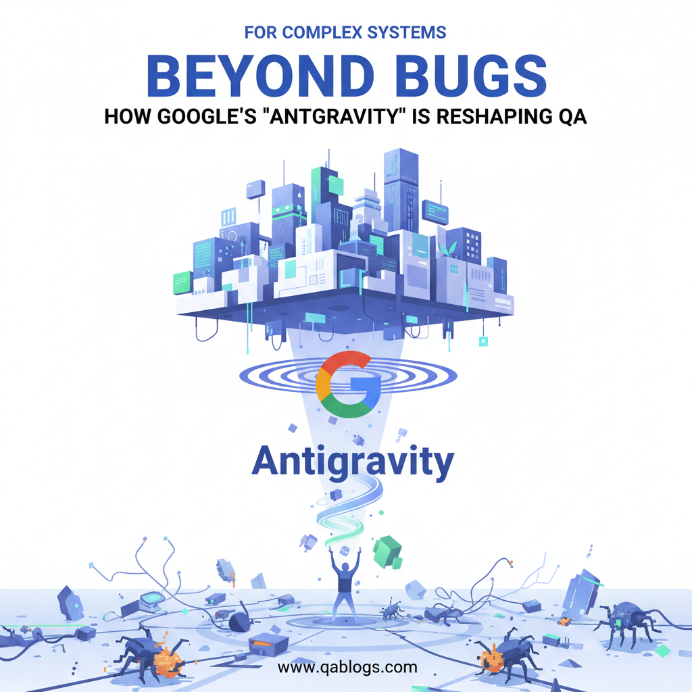

Beyond Bugs: How Google's "Antigravity" is Reshaping QA for Complex Systems

Key Takeaways
- "Antigravity" represents a shift towards defying the "gravity" of technical debt and flakiness in large-scale systems.
- The core philosophy relies on strict test isolation and determinism to eliminate flaky tests.
- Effective use of test doubles (mocks, stubs, fakes) is crucial for simulating complex dependencies.
- Adopting these principles leads to faster feedback loops and higher developer confidence.
In the world of software testing, we're constantly battling chaos. Flaky tests, unpredictable environments, and hidden dependencies can make even the most robust QA process feel like it's fighting against gravity. But what if you could create a testing environment where these disruptive forces simply... disappeared?
Enter the concept of "Google's Antigravity." No, it's not a secret physics lab hidden in Mountain View. It's a powerful engineering philosophy and a suite of practices designed to eliminate the "downward pull" of non-determinism in software systems. For QA professionals, understanding Antigravity isn't just a technical curiosity; it's a blueprint for building more reliable, scalable, and truly effective testing processes for the most complex applications.
Core Content: What Exactly is "Antigravity"?
At its core, Google's Antigravity is the principle of systematically removing randomness and external dependencies to create perfectly predictable and isolated testing environments.
The term was famously coined in a foundational Google testing paper, "Google's Test Analytics: The Open-Source Story." It describes the cultural and technical drive to make tests so reliable that they never fail for reasons outside the code they are validating. A test should fail for one reason only: a legitimate bug in the code under test, not because of a network glitch, a timing issue, or a dirty database.
The essential components of this philosophy are:
- Isolation: Every test must run in a hermetic environment. It should not rely on shared databases, external APIs, or the file system of the machine it's running on.
- Determinism: Given the same code and the same inputs, a test must produce the same result, every single time. No "flakiness" allowed.
- Simplicity & Speed: Tests should be fast and focused. If a test is slow, it won't be run frequently. Antigravity promotes mocking and stubbing to achieve this.
Context (Past): The Birth of a Philosophy
The need for Antigravity didn't emerge from a theoretical ideal; it was forged in the fires of necessity. In Google's early days, as the codebase grew exponentially, so did the test suite. They encountered a critical problem: flaky tests.
A test that passes 90% of the time is a cancer in a large-scale CI/CD system. It erodes trust in the entire testing process. Engineers start ignoring failures, and real bugs slip through. The cost of investigating these non-deterministic failures was staggering in terms of engineer-hours and delayed releases.
Google's response was a cultural mandate: "Fix the flake!" This evolved into a formalized engineering discipline. They built tools (like their core testing frameworks) and established protocols that made writing a flaky test harder than writing a stable one. Antigravity was the name given to this collective effort to defy the natural entropy of software systems.
Usage (Present): Antigravity in Action Today
So, how do you apply Antigravity principles in modern QA? It's about the tools and techniques you use to create those hermetic, deterministic environments.
The Fundamental Process:
- Identify Dependencies: For any piece of code you're testing, list all its dependencies—databases, web services, file I/O, system clock, even random number generators.
- Replace with Doubles: This is the heart of Antigravity. Use mocks,
stubs, and fakes to replace every single dependency.
- Stub: A simple replacement that returns predefined, canned responses.
- Mock: A smart object that you program with expectations (e.g., "this method must be called exactly once with these parameters").
- Fake: A lightweight, functional implementation for testing (e.g., an in-memory database instead of a real SQL server).
- Control Time: Instead of relying on System.currentTimeMillis(), inject a "time provider" that you can control in your tests. This eliminates failures due to timing assumptions.
- Run in Isolation: Use containerization (Docker) to ensure every test run starts with a pristine, identical environment.
Real-World Example: Testing a Payment Service
Imagine testing a processPayment(User user, PaymentDetails details) method.
Without Antigravity: The test connects to a live, shared payment gateway and a user database. It fails randomly because the gateway is slow, the database is locked by another test, or the test user's data was changed.
With Antigravity:
- The User object is a mock, returning a fixed, valid user ID.
- The call to the external payment gateway is mocked to instantly return a SUCCESS response without ever making a network call.
- The database connection is faked with an in-memory H2 database that is populated and torn down for each test.
This test is now fast, reliable, and its success or failure depends only on the logic
inside processPayment.
Future Outlook: The Next Frontier for Deterministic QA
The principles of Antigravity are becoming even more critical as we move forward:
AI and ML Testing: How do you test non-deterministic systems? The Antigravity approach will evolve to focus on testing the training data, the model boundaries, and the pipelines with extreme determinism, even if the model's output has a degree of variance.
Distributed Systems & Microservices: With chaos engineering, we intentionally introduce failure. Antigravity is the yin to its yang. You need perfectly deterministic tests for each service in isolation (Antigravity) before you can meaningfully test how they behave under failure (Chaos Engineering).
Major Challenge: The biggest challenge is cultural and educational. Getting entire teams, not just QA, to buy into and consistently apply these practices requires strong leadership and continuous mentoring.
Analysis: The Pros and Cons of an Antigravity Approach
Advantages:
- Ultra-Reliable Tests: Drastically reduces false positives and flakiness.
- Blazing Fast Feedback: Tests run in milliseconds, not minutes, enabling true TDD.
- Pinpoint Accuracy: When a test fails, you know the bug is in the code you're looking at, not in some external system.
- Enables Scale: This is the only way to manage testing for a codebase with millions of tests.
Limitations:
- Initial Overhead: Setting up mocks and fakes requires more upfront design and coding time.
- Over-Mocking Risk: You can create a "green test bubble" where your mocks behave perfectly, but the integration with the real world fails. You still need a smaller suite of integrated/end-to-end tests.
- Learning Curve: Requires a shift in mindset from "test the system" to "test the unit in perfect isolation."
Conclusion
Google's Antigravity is more than a clever name; it's a fundamental shift in how we approach quality. It teaches us that reliability isn't just about finding bugs—it's about building a testing ecosystem that is inherently immune to the noise and chaos of distributed software development.
By embracing isolation, determinism, and the strategic use of test doubles, we can elevate our QA processes from a constant battle against instability to a streamlined, trustworthy pipeline. We can, in effect, make our tests defy gravity.
Join Our Community of QA Professionals
Get exclusive access to in-depth articles, testing strategies, and industry insights. Stay ahead of the curve with our expert-curated content delivered straight to your inbox.
Nikunj Mistri
Founder, QA Blogs
About the Author